pacman::p_load(tidyverse, readxl, tidyr, kableExtra, psych, dplyr,
patchwork, corrplot, RColorBrewer, gganimate, ggrepel, ggimage) Unmasking Motor Insurance Risk Drivers
Technical Report
1 Overview
1.1 Background
“Insurers often carry underperforming portfolios where the root causes of poor profitability and high volatility are unknown. Leveraging visual analytics can potentially help investigate trends in underlying loss drivers, while data enrichment using external data can help refine segmentation and underwriting strategy.” From Advanced analytics: unlocking new frontiers in P&C insurance.
However, the use of visual analytics to support data-driven analytical decision-making in the insurance industry has traditionally focused on dashboard reporting. This limitation is mainly due to the general lack of advanced analytical capabilities in commercial off-the-shelf data visualisation tools such as Tableau and Microsoft Power BI.
Using a real-world open-access motor vehicle insurance portfolio dataset and appropriate visual analytics libraries in R, this applied visual anaytics investigation requires you to demonstrate the potential value of visual analytics techniques for exploring and analysing numerical, categorical, and temporal variables. The objective is to gain deeper insights into data distributions and identifying key factors influencing the profitability and volatility of the insurance portfolio.
1.2 The Tasks
The specific tasks of this study are:
- Apply suitable univariate visual analytics techniques to explore the distributions and characteristics of numerical and categorical variables.
- Apply suitable bivariate visual analytics techniques to investigate and statistically validate factors influencing the profitability and volatility of the insurance portfolio.
2 Getting Started
2.1 Installing and loading the required libraries
The code chunk below uses the p_load() function in the pacman package to check if the packages are installed in the computer. If yes, they are then loaded into the R environment. If no, they are installed, and then loaded into the R environment.
Show the code
library_desc <- tibble(
Package = c("tidyverse", "readxl", "tidyr", "kableExtra", "psych", "dplyr",
"patchwork", "corrplot", "RColorBrewer", "gganimate", "ggrepel", "ggimage"),
Purpose = c(
"A collection of R packages for data science including ggplot2, dplyr, tidyr, readr, and others.",
"Read Excel files (.xls and .xlsx) into R.",
"Reshape and tidy data between wide and long formats.",
"Enhance HTML and LaTeX tables created by kable() with advanced styling.",
"Provide descriptive statistics and psychometric analysis functions.",
"A grammar of data manipulation with functions like filter, mutate, summarise.",
"Combine multiple ggplot2 plots into a single layout.",
"Visualize correlation matrices with customizable styles.",
"Provide color palettes for maps and charts.",
"Create animated ggplot2 visualizations with frame transitions.",
"Automatically position text labels in ggplot2 to avoid overlapping.",
"Display images and logos as data points in ggplot2 charts"
)
)
library_desc %>%
kable() %>%
kable_styling(bootstrap_options = c("striped", "hover", "condensed"),
full_width = FALSE)| Package | Purpose |
|---|---|
| tidyverse | A collection of R packages for data science including ggplot2, dplyr, tidyr, readr, and others. |
| readxl | Read Excel files (.xls and .xlsx) into R. |
| tidyr | Reshape and tidy data between wide and long formats. |
| kableExtra | Enhance HTML and LaTeX tables created by kable() with advanced styling. |
| psych | Provide descriptive statistics and psychometric analysis functions. |
| dplyr | A grammar of data manipulation with functions like filter, mutate, summarise. |
| patchwork | Combine multiple ggplot2 plots into a single layout. |
| corrplot | Visualize correlation matrices with customizable styles. |
| RColorBrewer | Provide color palettes for maps and charts. |
| gganimate | Create animated ggplot2 visualizations with frame transitions. |
| ggrepel | Automatically position text labels in ggplot2 to avoid overlapping. |
| ggimage | Display images and logos as data points in ggplot2 charts |
2.2 Importing data
A real world motor vehicle insurance portfolio data set from a Spanish insurance company specialised in non-life insurance will be used in this study. The data set and its cookbook are available for download at Mendeley Data.
The dataset contains anonymised microdata on automobile insurance policies and covers the main operations of the non-life portfolio from January 2022 to December 2024. The database shows 354,140 records and 47 variables, where each row corresponds to a policy transaction and each column to a specific attribute of that transaction.
This dataset uses semicolon delimiters, we use read_delim() to deal with semicolon delimiters.
motoinsu <- read_delim(
"data/Motor_insurance_portfolio.csv",
delim = ";"
)3 Data wrangling
3.1 Feature Meaning
Out of a total of 47 attributes in the motoinsu tibble data frame, 29 of them are numerical data type (dbl - double) and 28 features are categorical data type (char - character).
Show the code
#| code-fold: true
#| code-summary: "Show the code"
#|
var_desc <- read_excel("data/Descriptive_of_variables.xlsx") %>%
fill(everything(), .direction = "down") %>%
group_by(Variables, Group) %>%
summarise(Description = paste(Description, collapse = " "), .groups = "drop")
var_desc %>%
kable() %>%
kable_styling(bootstrap_options = c("striped", "hover", "condensed"),
full_width = FALSE)| Variables | Group | Description |
|---|---|---|
| age_driving_licence | Driver and vehicle characteristics | Year in which the insured obtained the driving licence. Note: this variable records the calendar year of licence issuance and does not measure the length of time the licence has been held. |
| bonus_score | Policy and insured characteristics | Indicator of the policyholder’s past claims experience: - G: Positive reflects a favourable claims history - N: indicates a neutral profile - B: had a negative denotes a poor claims history. |
| business_type | Policy and insured characteristics | Classification of the policy according to its business origin. - NB: new_business - P: portfolio |
| circulation_area | Driver and vehicle characteristics | Indicates the predominant circulation environment of the vehicle: - U: urban - R: rural |
| driver_age | Driver and vehicle characteristics | Age of the main driver associated with the policy, measured in years. |
| fire_claims | Exposure, claims and incurred | Count of fire-related claims. |
| fire_incurred | Exposure, claims and incurred | Total incurred cost for fire claims. |
| fire_premium | Premiums | Premium for fire coverage. |
| fuel_type | Driver and vehicle characteristics | Indicates the vehicle’s fuel type. In this dataset, only two categories are kept: - D: diesel - G: gasoline |
| glass_claims | Exposure, claims and incurred | Number of glass-related claims. |
| glass_incurred | Exposure, claims and incurred | Total incurred cost for glass claims. |
| glass_premium | Premiums | Premium for glass coverage. |
| insured_id | Policy and insured characteristics | Unique identifier assigned to each policy number. It assigns a sequential ID based on the first appearance of each policy number; repeated policy numbers receive the same ID. |
| legal_protection_claims | Exposure, claims and incurred | Number of legal protection claims. |
| legal_protection_incurred | Exposure, claims and incurred | Total incurred cost for legal protection claims. |
| legal_protection_premium | Premiums | Premium for legal protection coverage. |
| liability_claims | Exposure, claims and incurred | Total number of liability claims reported under the policy. |
| liability_exposure | Exposure, claims and incurred | Amount of exposure associated with liability coverage. |
| liability_incurred | Exposure, claims and incurred | Total incurred cost (paid + reserved) for all liability claims. |
| liability_injury_claims | Exposure, claims and incurred | Number of liability claims involving bodily injury. |
| liability_injury_incurred | Exposure, claims and incurred | Total incurred cost for liability claims involving bodily injury. |
| liability_premium | Premiums | Premium charged for third-party liability coverage. |
| liability_property_claims | Exposure, claims and incurred | Number of liability claims related to material or property damage. |
| liability_property_incurred | Exposure, claims and incurred | Total incurred cost for liability claims involving material or property damage. |
| municipality_type | Driver and vehicle characteristics | Geographic classification of the policyholder’s municipality: - I: inland - C: coastal - IS: islands |
| occupants_claims | Exposure, claims and incurred | Number of claims under this coverage. |
| occupants_incurred | Exposure, claims and incurred | Total incurred cost under this coverage. |
| occupants_premium | Premiums | Premium for personal-injury coverage of vehicle occupants. |
| payment_frequency | Policy and insured characteristics | Indicates the policy’s billing frequency: - A: annual - S: semiannual - Q: quarterly |
| policy_status | Policy and insured characteristics | Indicates whether the policy was active (A) or cancelled (C) at the time of analysis. |
| policy_type | Policy and insured characteristics | Categorical variable describing the main coverage structure of the motor insurance policy. The original detailed combinations have been grouped into broader, actuarially meaningful categories. - TP: Basic third-party liability coverage only. - TPG: Third-party liability with glass coverage. - CC: Third-party liability combined with two or more additional coverages, such as theft, fire, total loss or glass. - COMP_E: comprehensive with excess. - COMP_N: comprehensive without excess |
| power_to_weight_ratio | Driver and vehicle characteristics | Approximate weight-to-power ratio of the vehicle (kg per horsepower), used as a proxy for performance characteristics. |
| property_claims | Exposure, claims and incurred | Count of property damage claims. |
| property_damage_premium | Premiums | Premium corresponding to property damage coverage. |
| property_incurred | Exposure, claims and incurred | Total incurred cost for property damage claims. |
| seats | Driver and vehicle characteristics | Number of seats available in the insured vehicle. |
| theft_claims | Exposure, claims and incurred | Number of theft-related claims. |
| theft_incurred | Exposure, claims and incurred | Total incurred cost for theft claims. |
| theft_premium | Premiums | Premium associated with theft coverage. |
| total_claims | Exposure, claims and incurred | Indicates the total number of claims reported for the policy during the exposure period. Typical values range from 0 (no claims) to several claims per contract. |
| total_exposure | Exposure, claims and incurred | Represents the effective time-on-risk for each policy, expressed in policy years. Values range from 0 to 1 for partial-year exposure, and may exceed 1 if the contract covers more than one year. |
| total_incurred | Exposure, claims and incurred | Represents the total incurred cost of claims for the policy, including paid amounts and outstanding reserves. Values are typically zero for policies without losses and positive when claims exist. |
| total_premium | Premiums | Total premium of the policy, calculated as the sum of all individual coverage premiums. |
| vehicle_age | Driver and vehicle characteristics | Age of the insured vehicle, also measured in years. |
| vehicle_brand | Driver and vehicle characteristics | Brand of the insured vehicle as reported in the policy data. |
| vehicle_value | Driver and vehicle characteristics | Declared insured value of the vehicle. Some entries are missing |
| year | Policy and insured characteristics | Calendar year |
Show the code
#| code-fold: true
#| code-summary: "Show the code"
describe(motoinsu %>%
select(where(is.numeric)) # Only show numerical columns
) %>%
select(vars, min, max, mean, skew) # Only get desired columns vars min max mean skew
insured_id 1 1.00 185678.00 76044.50 0.47
year 2 2022.00 2024.00 2023.29 -0.53
driver_age 3 18.00 90.00 49.01 0.23
vehicle_age 4 0.00 68.00 25.92 0.19
age_driving_licence 5 0.00 80.00 22.99 2.14
vehicle_value 6 1630.12 374034.21 26977.44 2.19
seats 7 2.00 9.00 5.08 0.90
power_to_weight_ratio 8 0.00 64.81 12.33 1.06
total_premium 9 0.00 5107.64 296.72 2.43
liability_premium 10 0.00 2320.77 180.71 2.19
property_damage_premium 11 0.00 3736.73 73.52 3.52
theft_premium 12 0.00 1047.04 11.25 8.19
fire_premium 13 0.00 72.09 1.51 4.84
glass_premium 14 0.00 387.61 19.50 2.03
legal_protection_premium 15 0.00 175.06 8.27 1.27
occupants_premium 16 0.00 68.65 1.97 1.34
total_claims 17 0.00 18.00 0.22 4.71
liability_claims 18 0.00 8.00 0.11 4.29
liability_property_claims 19 0.00 8.00 0.09 3.86
liability_injury_claims 20 0.00 3.00 0.01 8.90
property_claims 21 0.00 15.00 0.06 9.38
theft_claims 22 0.00 2.00 0.01 14.43
fire_claims 23 0.00 1.00 0.00 59.48
glass_claims 24 0.00 3.00 0.03 5.89
legal_protection_claims 25 0.00 2.00 0.01 10.47
occupants_claims 26 0.00 1.00 0.00 90.73
total_incurred 27 0.00 571128.32 208.58 104.16
liability_incurred 28 0.00 561759.79 133.71 114.05
liability_property_incurred 29 0.00 34553.88 65.74 18.28
liability_injury_incurred 30 0.00 560025.59 67.96 126.58
property_incurred 31 0.00 27542.43 52.66 17.76
theft_incurred 32 0.00 40324.89 4.51 105.49
fire_incurred 33 0.00 28267.13 0.76 208.29
glass_incurred 34 0.00 4533.40 12.59 9.02
legal_protection_incurred 35 0.00 9889.85 3.32 45.48
occupants_incurred 36 0.00 69000.00 1.01 259.05
total_exposure 37 0.00 1.00 0.71 -0.67
liability_exposure 38 0.00 1.00 0.71 -0.673.2 Conversing datatype
Based on the meaning and current type of features, we need to change data type of some variables as follows.
motoinsu <- motoinsu %>%
mutate(
# from dbl to chr (identifier)
insured_id = as.character(insured_id),
# from dbl to fac (categorical)
across(c(year, policy_type, policy_status, business_type,
payment_frequency, bonus_score, fuel_type, seats,
vehicle_brand, municipality_type, circulation_area),
as.factor),
# from char to dbl
across(c(liability_premium, property_damage_premium,
theft_premium, fire_premium, glass_premium,
legal_protection_premium, occupants_premium,
total_exposure, liability_exposure),
as.double)
)
Tip
- dbl stands for double, numbers with decimals.
- fct stands for factor, text with fixed, known categories. Factor uses less memory, which matters in such large database.
- char stands for character, plain text without predefined categories.
After changing data type, we have 1 identifier, 11 categorical variables and 35 numerical variables.
3.3 Handling missing values
There are six features having missing values. Although all of these rates are small, under 1%, we treat them differently.
colSums(is.na(motoinsu)) %>%
.[. > 0] vehicle_age age_driving_licence fuel_type vehicle_value
2 2 1287 513 colMeans(is.na(motoinsu)) %>% # Caculate missing rate in each column
round(5) %>%
.[. > 0] # Filter ratio > 0 vehicle_age age_driving_licence fuel_type vehicle_value
0.00001 0.00001 0.00363 0.00145 vehicle_age,age_driving_licenceonly lack two values, we drop these missing rows.fire_incurred,occupants_incurredhaving missing values likely means no claim, in insurance context. Therefore we can change to zero.fuel_type,vehicle_valuehave more missing values, which make I consider between using mode/medium or remove missing rows. Because they are seem important features, it is risky to impute data. This issue should be reported to the relevant stakeholders.
motoinsu <- motoinsu %>%
drop_na(vehicle_age, age_driving_licence, fuel_type, vehicle_value ) %>%
mutate(
fire_incurred = replace_na(fire_incurred, 0),
occupants_incurred = replace_na(occupants_incurred, 0)
)
# Check after modification
colSums(is.na(motoinsu)) %>%
.[. > 0]named numeric(0)3.4 Checking outliers
To check whether we need to remove abnormal records, we use Z-score. It measures how many standard deviations a value is away from the mean.
z = (value - mean) / standard deviation
In general statistics, any data point with an absolute Z-score greater than 3 is widely flagged as an potential outlier, some researchs use threshold 3.5 (1.3.5.17. Detection of Outliers (n.d.)). However in insurance field with heavy-tailed distributions, values far beyond 6 standard deviations occur with non-negligible probability (Embrechts and Schmidli (1994)).
Show the code
# Check all numeric variables at once
numeric_vars <- motoinsu %>%
select(where(is.numeric)) %>%
names()
outlier_summary <- map_dfr(numeric_vars, function(var) {
x <- motoinsu[[var]]
x_nonzero <- x[x > 0] # for skewed insurance data, check non-zero only
Q1 <- quantile(x, 0.25, na.rm = TRUE)
Q3 <- quantile(x, 0.75, na.rm = TRUE)
IQR_val <- Q3 - Q1
tibble(
variable = var,
max_val = max(x, na.rm = TRUE),
p999 = quantile(x, 0.999, na.rm = TRUE),
max_z = if(length(x_nonzero) > 1) max(abs(scale(x_nonzero))) else NA,
n_over_3sd = if(length(x_nonzero) > 1) sum(abs(scale(x_nonzero)) > 3) else NA,
pct_over_3sd = if(length(x_nonzero) > 1) round(mean(abs(scale(x_nonzero)) > 3) * 100, 3) else NA,
iqr_fence = Q3 + 3 * IQR_val,
n_beyond_iqr = sum(x > Q3 + 3 * IQR_val, na.rm = TRUE)
)
})
outlier_summary %>%
kable(format.args = list(big.mark = ",", scientific = FALSE)) %>%
kable_styling(bootstrap_options = c("striped", "hover", "condensed"))| variable | max_val | p999 | max_z | n_over_3sd | pct_over_3sd | iqr_fence | n_beyond_iqr |
|---|---|---|---|---|---|---|---|
| driver_age | 90.00000 | 81.000000 | 3.398199 | 27 | 0.008 | 115.000000 | 0 |
| vehicle_age | 68.00000 | 56.000000 | 3.631001 | 24 | 0.007 | 89.000000 | 0 |
| age_driving_licence | 80.00000 | 58.000000 | 8.965607 | 7,424 | 2.107 | 43.000000 | 6,328 |
| vehicle_value | 374,034.20985 | 105,294.000000 | 28.260025 | 5,592 | 1.587 | 73,162.425000 | 3,033 |
| power_to_weight_ratio | 64.81000 | 22.800000 | 21.245611 | 2,209 | 0.627 | 22.680000 | 368 |
| total_premium | 5,107.63987 | 2,023.750471 | 21.199671 | 5,140 | 1.459 | 1,099.560645 | 3,322 |
| liability_premium | 2,320.76510 | 1,103.984594 | 16.509734 | 5,005 | 1.421 | 673.681782 | 2,647 |
| property_damage_premium | 3,336.72890 | 1,342.728400 | 15.696647 | 1,667 | 1.539 | 328.026367 | 23,385 |
| theft_premium | 1,047.03645 | 201.746258 | 52.337092 | 5,184 | 1.669 | 48.687592 | 11,623 |
| fire_premium | 72.08914 | 22.728305 | 30.473847 | 5,975 | 1.924 | 6.377333 | 11,522 |
| glass_premium | 387.60796 | 122.071526 | 21.791162 | 5,258 | 1.517 | 85.399483 | 2,197 |
| legal_protection_premium | 175.05605 | 33.785978 | 27.620985 | 4,042 | 1.147 | 32.402998 | 454 |
| occupants_premium | 68.64614 | 6.319273 | 50.435347 | 661 | 0.188 | 7.647273 | 63 |
| total_claims | 18.00000 | 6.000000 | 16.053260 | 1,416 | 2.805 | 0.000000 | 50,476 |
| liability_claims | 8.00000 | 3.000000 | 13.183576 | 792 | 2.593 | 0.000000 | 30,541 |
| liability_property_claims | 8.00000 | 2.000000 | 20.823683 | 265 | 0.885 | 0.000000 | 29,933 |
| liability_injury_claims | 3.00000 | 1.000000 | 13.260422 | 102 | 2.146 | 0.000000 | 4,752 |
| property_claims | 15.00000 | 5.000000 | 9.798120 | 159 | 1.285 | 0.000000 | 12,369 |
| theft_claims | 2.00000 | 1.000000 | 6.622250 | 41 | 2.228 | 0.000000 | 1,840 |
| fire_claims | 1.00000 | 0.000000 | NaN | NA | NA | 0.000000 | 100 |
| glass_claims | 3.00000 | 2.000000 | 9.742236 | 413 | 3.717 | 0.000000 | 11,112 |
| legal_protection_claims | 2.00000 | 1.000000 | 7.563544 | 58 | 1.718 | 0.000000 | 3,377 |
| occupants_claims | 1.00000 | 0.000000 | NaN | NA | NA | 0.000000 | 43 |
| total_incurred | 571,128.31800 | 16,968.783301 | 89.021023 | 233 | 0.555 | 0.000000 | 41,978 |
| liability_incurred | 561,759.78550 | 14,459.047629 | 65.834122 | 113 | 0.548 | 0.000000 | 20,633 |
| liability_property_incurred | 34,553.87750 | 4,880.463150 | 25.822197 | 316 | 1.644 | 0.000000 | 19,219 |
| liability_injury_incurred | 560,025.58550 | 12,113.968452 | 33.026573 | 46 | 0.968 | 0.000000 | 4,750 |
| property_incurred | 27,542.43100 | 5,224.678689 | 15.397574 | 210 | 1.699 | 0.000000 | 12,358 |
| theft_incurred | 40,324.88800 | 764.429886 | 15.503976 | 32 | 1.739 | 0.000000 | 1,840 |
| fire_incurred | 28,267.12650 | 0.000000 | 6.231853 | 2 | 2.020 | 0.000000 | 99 |
| glass_incurred | 4,533.40350 | 936.504432 | 15.856483 | 128 | 1.152 | 0.000000 | 11,110 |
| legal_protection_incurred | 9,889.85050 | 818.832856 | 18.729353 | 34 | 1.022 | 0.000000 | 3,326 |
| occupants_incurred | 69,000.00000 | 0.000000 | 3.694334 | 2 | 4.651 | 0.000000 | 43 |
| total_exposure | 1.00000 | 1.000000 | 2.159497 | 0 | 0.000 | 2.668493 | 0 |
| liability_exposure | 1.00000 | 1.000000 | 2.159497 | 0 | 0.000 | 2.668493 | 0 |
Besides Z-score analysis, the IQR fence method (Q3 + 3×IQR) confirms that most incurred and claims variables have zero observations beyond the nonparametric fence. The percentage exceeding 3 standard deviations remains below 1% for nearly all variables, which is statistically expected.
Furthermore, in the insurance domain, extreme values represent genuine catastrophic claims rather than data entry errors, and removing them would introduce survivorship bias that understates portfolio risk.
Therefore, we retain all observations for subsequent analysis. So we are safe to move on further analysis.
4 Visual Analysis
4.1 Univariate Analysis
We demonstrate all distributions by each variable (categorical and numerical) to have a comprehensive analysis.
4.1.1 Categorical variables
Among 11 categorical columns, vehicle_brand has too many distinct values. Therefore we will visualize its distribution and impute it later. Following is the distributions of 10 categorical features.
We mainly use histogram chart to demonstrate distrubutions in univariate analysis.
Show the code
# gom_bar(): counts rows automatically
# fct_infreq: reorder factor levels based on the frequency of values
cat_vars <- c("year", "policy_type", "policy_status", "business_type",
"payment_frequency", "bonus_score",
"fuel_type", "seats",
"municipality_type", "circulation_area")
plots <- lapply(cat_vars, function(col) {
ggplot(motoinsu, aes(x = fct_infreq(!!sym(col)))) +
geom_bar(aes(y = after_stat(count/sum(count) * 100)), fill = "steelblue") +
geom_text(aes(y = after_stat(count/sum(count) * 100),
label = paste0(round(after_stat(count/sum(count) * 100), 1), "%")),
stat = "count", vjust = -0.5, size = 3) +
labs(title = paste("Distribution of", col), x = col, y = "Percentage (%)") +
theme_minimal() +
theme(axis.text.x = element_text(angle = 45, hjust = 1))
})
wrap_plots(plots, ncol = 3)
NoteInsights: Categorical variables
Policy & Business Characteristics
- Year: Data is unbalanced - 2024 (47.4%) has the most records, likely because policies accumulate over time. Dataset covers 3 years of a growing portfolio.
- Policy type: CC dominates (58%), meaning most customers choose combined third-party + additional coverage. Pure TP is rare (1.6%) - customers prefer more protection.
- Policy status: 89.2% active (A) vs 10.8% cancelled (C) - relatively low cancellation rate, portfolio is stable.
- Business type: 69.3% new business (NB) vs 30.7% portfolio (P), which means the insurer is heavily acquiring new customers rather than renewing existing ones. This is a risk signal, new customers have unknown claims history.
- Payment frequency: 81.3% pay annually (A) - most customers prefer single payment, simplifying cash flow for the insurer.
- Bonus score: 96.5% have score G (good/favorable claims history) - the portfolio is dominated by low-risk customers historically.
Vehicle Characteristics
- Fuel type: 64.2% diesel (D) vs 35.8% gasoline (G) - diesel vehicles dominate, which may have different risk profiles.
- Seats: 84.9% have 5 seats - standard passenger cars dominate, very homogeneous portfolio.
Geographic
- Municipality type: 64.6% type I (Inland) where typically have higher accident/theft risk than coastal and island areas.
- Circulation area: Nearly split between U (53.8%) and R (46.2%) - urban vs rural almost balanced, suggesting national coverage.
Vehicle brand distribution show high fragmentation with top brand ~10%, many brands with <1%. We will combine all brands excluding RENAULT, CITROEN, PEUGEOT, VOLKSWAGEN, FORD, SEAT, and OPEL (having share >= 5%).
Show the code
motoinsu %>%
count(vehicle_brand) %>%
mutate(pct = n / sum(n) * 100) %>%
ggplot(aes(x = reorder(vehicle_brand, -pct), y = pct,
fill = ifelse(pct >= 5, "orange", "steelblue"))) +
geom_col() +
geom_text(aes(label = paste0(round(pct, 1), "%")),
vjust = -0.5, size = 3) +
scale_fill_identity() +
labs(title = "Distribution of Vehicle Brand", x = "Vehicle Brand", y = "Percentage (%)") +
theme_minimal() +
theme(axis.text.x = element_text(angle = 45, hjust = 1))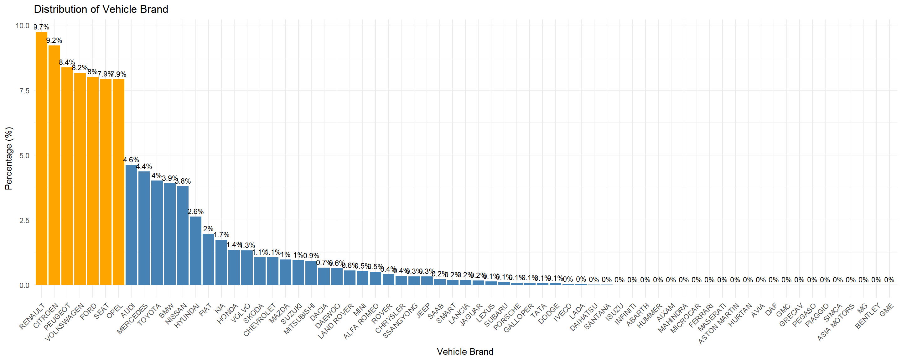
Then plot them by distribution.
Show the code
# Bin
top_brands <- c("RENAULT", "CITROEN", "PEUGEOT", "VOLKSWAGEN", "FORD", "SEAT", "OPEL")
motoinsu <- motoinsu %>%
mutate(vehicle_brand_grouped = fct_other(vehicle_brand,
keep = top_brands,
other_level = "Others"))
# Draw chart
ggplot(motoinsu, aes(x = fct_infreq(vehicle_brand_grouped))) +
geom_bar(aes(y = after_stat(count/sum(count) * 100)), fill = "steelblue") +
geom_text(aes(y = after_stat(count/sum(count) * 100),
label = paste0(round(after_stat(count/sum(count) * 100), 1), "%")),
stat = "count", vjust = -0.5, size = 3) +
labs(title = "Distribution of Vehicle Brand", x = "Vehicle Brand", y = "Percentage (%)") +
theme_minimal() +
theme(axis.text.x = element_text(angle = 45, hjust = 1))
Note
Insights: Vehicle brand
- The near-equal spread among top brands means risk is not concentrated in any single brand’s characteristics.
- Among top 7, French brands (RENAULT, CITROEN, PEUGEOT) collectively represent ~27%, reflecting Spain’s strong preference for French automobiles.
- SEAT’s presence (~7.9%) is notable as a Spanish domestic brand, expected in a Spanish portfolio.
- The large “Others” group (40.6%) warrants further investigation - it contains luxury brands (BMW, MERCEDES, AUDI) and niche brands that may carry higher vehicle values and different risk profiles.
4.1.2 Numerical variables
Driver & Vehicle Distributions
Show the code
num_vars <- c("driver_age", "vehicle_age", "age_driving_licence",
"vehicle_value", "power_to_weight_ratio")
plots <- lapply(num_vars, function(col) {
ggplot(motoinsu, aes(x = as.numeric(!!sym(col)))) + # as.numeric() inside aes() forces any discrete/factor columns to be treated as continuous
geom_histogram(fill = "steelblue", color = "white", bins = 30) +
labs(title = paste("Distribution of", col), x = col, y = "Count") +
theme_minimal()
})
wrap_plots(plots, ncol = 3)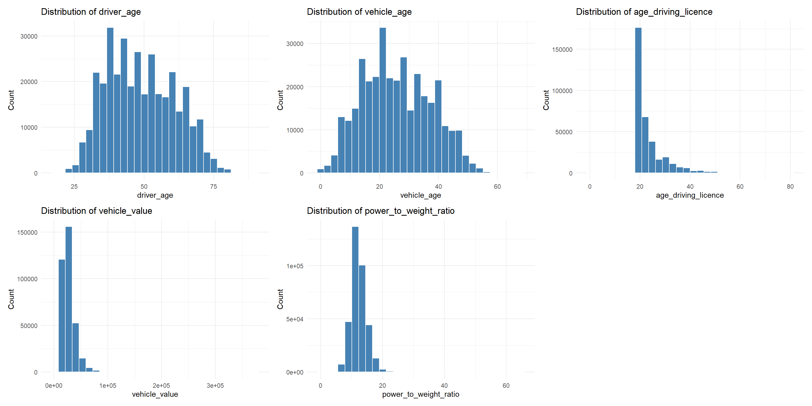
NoteInsights: Driver & Vehicle Distributions
Driver & Licence Characteristics
driver_age: roughly bell-shaped, peaking around 35–50 years. Young drivers (<25) and elderly (>70) are rare, suggesting the portfolio skews toward middle-aged, experienced drivers.
vehicle_age: bimodal with peaks around 10 and 25 years, meaning the portfolio covers both newer and older vehicles almost equally.
age_driving_licence: heavily right-skewed, most policyholders have held licences for less than 20 years, consistent with the driver age distribution.
Vehicle Characteristics
vehicle_value: heavily right-skewed, most vehicles are low value under 50,000, with a very long tail up to 300,000+ (luxury/high-end vehicles).
power_to_weight_ratio: concentrated tightly between 10 and 20, with very few high-performance outliers above 40. Portfolio is dominated by standard passenger cars.
4.2 Bivariate Analysis
We run some experiments to find out which pairs are best to visualize and deliver significant insights.
4.2.1 Profitability Analysis: Incurred/Claims by Policy Type
We using boxplot chart to show relationship of total_incurred by policy_type. Because numerical variables here are right-skewed with a dozen of zero and with long tail with very large number, scale_y_log10() is used to spaces them logarithmically while maintains real values. We will calculate median filtering out zero values.
Show the code
x_var <- "policy_type"
y_var <- "total_incurred"
median_labels <- motoinsu %>%
filter(!!sym(y_var) > 0) %>%
group_by(!!sym(x_var)) %>%
summarise(med = median(!!sym(y_var)))
motoinsu %>%
filter(!!sym(y_var) > 0) %>%
ggplot(aes(y = !!sym(y_var), x = !!sym(x_var), fill = !!sym(x_var))) +
geom_boxplot(outlier.alpha = 0.2) +
geom_label(data = median_labels,
aes(x = !!sym(x_var), y = med,
label = scales::comma(round(med, 0))),
fill = "white", size = 3, inherit.aes = FALSE) +
scale_y_log10(labels = scales::comma) +
labs(title = paste("Boxplot of", y_var, "by", x_var),
x = x_var, y = paste(y_var, "(log scale)")) +
theme_minimal()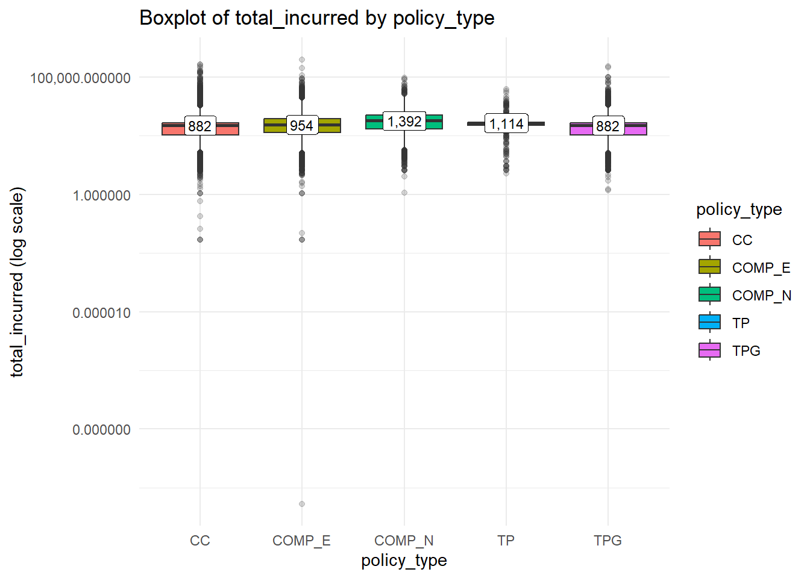
NoteInsights: Total Incurred by Policy Type
- COMP_N has the highest median incurred (1,392), consistent with no-excess comprehensive coverage encouraging more claims.
- TP surprisingly ranks second (1,114), suggesting liability-only claims tend to be costly when they do occur (bodily injury).
- COMP_E (954) is lower than TP despite broader coverage, likely because the excess/deductible filters out small claims.
- CC and TPG share the lowest median (882), high volume products with more mixed, smaller claims.
Show the code
x_var <- "policy_type"
y_var <- "total_claims"
median_labels <- motoinsu %>%
filter(!!sym(y_var) > 0) %>%
group_by(!!sym(x_var)) %>%
summarise(med = median(!!sym(y_var)))
motoinsu %>%
filter(!!sym(y_var) > 0) %>%
ggplot(aes(y = !!sym(y_var), x = !!sym(x_var), fill = !!sym(x_var))) +
geom_boxplot(outlier.alpha = 0.2) +
geom_label(data = median_labels,
aes(x = !!sym(x_var), y = med,
label = scales::comma(round(med, 0))),
fill = "white", size = 3, inherit.aes = FALSE) +
scale_y_log10(labels = scales::comma) +
labs(title = paste("Boxplot of", y_var, "by", x_var),
x = x_var, y = paste(y_var, "(log scale)")) +
theme_minimal()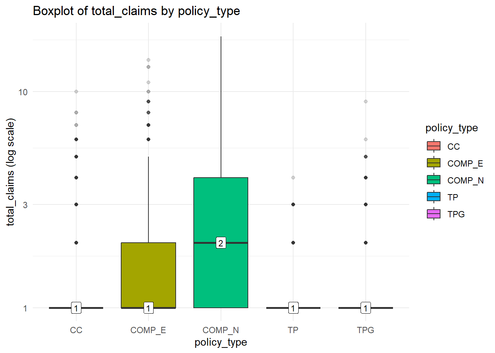
NoteInsights: Total Claims by Policy Type
- CC and TP median is at 1, most policies only ever have 1 claim at most, very low frequency.
- COMP_N shows the widest box (highest IQR between 1–5), comprehensive without excess generates more frequent claims, likely because no excess/deductible discourages small claims
- COMP_E has more outliers reaching 10+ claims, excess policies attract higher-risk customers who still manage to claim frequently despite the deductible barrier.
- TP and TPG are nearly flat at 1, very low claim frequency for basic coverage.
Warning
COMP_N is the most volatile product: high claim frequency AND high incurred losses. The absence of excess (deductible) in COMP_N likely encourages policyholders to file more claims, driving up both frequency and severity.
➨ The insurer should consider reviewing COMP_N pricing strategy as it appears to be the highest-risk product in the portfolio.
4.2.2 Temporal Analysis: performance by Year
With line chart, we perform average of incurred amount, average of premium and loss ratio (total_incurred/total_premium) by year to see the temporal changes.
Show the code
motoinsu %>%
group_by(year) %>%
summarise(
avg_incurred = mean(total_incurred, na.rm = TRUE),
avg_premium = mean(total_premium, na.rm = TRUE),
loss_ratio = sum(total_incurred)/sum(total_premium)*100
) %>%
pivot_longer(-year, names_to = "metric", values_to = "value") %>%
ggplot(aes(x = as.numeric(as.character(year)), y = value,
color = metric, group = metric)) +
geom_line() +
geom_point() +
facet_wrap(~metric, scales = "free_y", nrow = 3) +
scale_x_continuous(breaks = c(2022, 2023, 2024)) +
theme_minimal() +
labs(title = "Portfolio Performance Trend 2022-2024", x = "Year", y = "Value")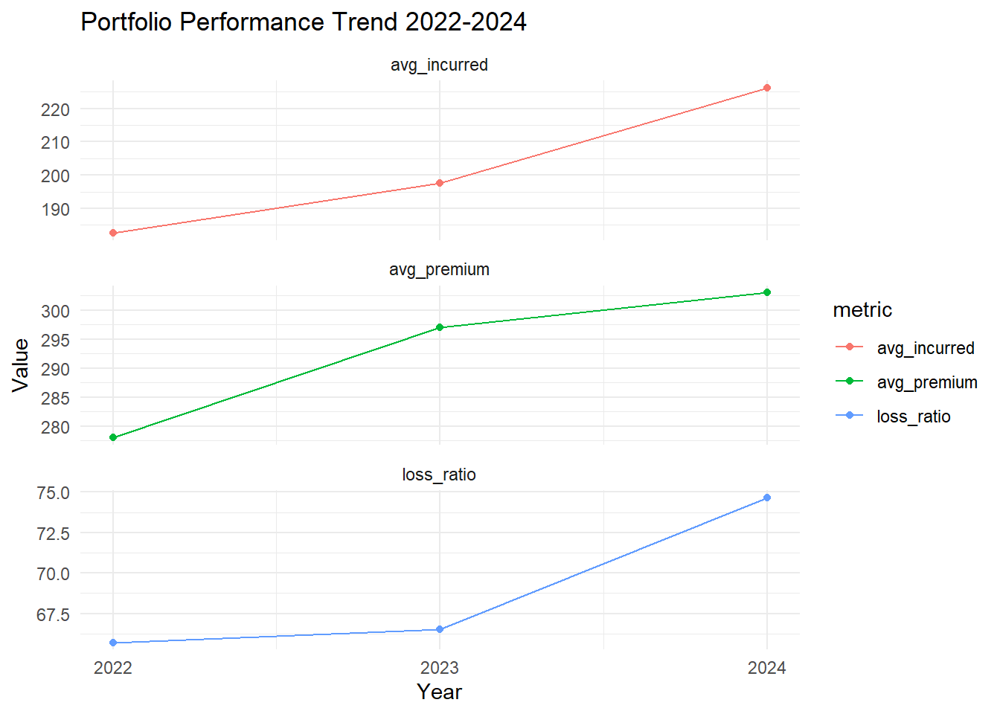
NoteInsights: performance by Year
- avg_incurred (red) shows a consistent upward trend from ~187 in 2022 to ~224 in 2024, meaning the average cost per claim is increasing every year - a clear sign of growing claims severity.
- avg_premium (green) peaked in 2023 then slightly declined in 2024, suggesting the insurer may have reduced premiums to attract new business (consistent with 69.3% new business ratio) while claims costs continued rising.
- loss_ratio (blue) increases from ~66.5% in 2022 to ~67% in 2023 to ~75% in 2024. The jump from 2023 to 2024 is the most alarming signal — a near 8 percentage point spike in a single year. The portfolio is becoming less profitable at an accelerating rate.
Warning
The combination of rising incurred losses, declining premiums, and worsening loss ratio suggests the portfolio is under increasing financial stress. The heavy reliance on new business acquisition without sufficient premium adjustment is a key risk driver the insurer should address urgently.
4.2.3 Loss Ratio Analysis: loss_ratio by policy_type/bonus_score
Show the code
group_var <- "policy_type"
loss_data <- motoinsu %>%
group_by(!!sym(group_var)) %>%
summarise(loss_ratio = sum(total_incurred)/sum(total_premium)*100) %>%
mutate(status = ifelse(loss_ratio >= 70, "Above 70%", "Below 70%"))
ggplot(loss_data, aes(x = reorder(!!sym(group_var), loss_ratio),
y = loss_ratio, fill = status)) +
geom_col() +
geom_hline(yintercept = 70, linetype = "dashed", color = "grey30", linewidth = 0.8) +
annotate("text", x = 0.5, y = 72, label = "70% Benchmark",
hjust = 0, size = 3.5, color = "grey30") +
geom_text(aes(label = paste0(round(loss_ratio, 1), "%")), hjust = -0.2, size = 4) +
coord_flip() +
scale_fill_manual(values = c("Above 70%" = "#F1948A", "Below 70%" = "#AED6F1")) +
scale_y_continuous(expand = expansion(mult = c(0, 0.15))) +
labs(title = paste("Loss Ratio by", group_var), x = NULL, y = "Loss Ratio (%)") +
theme_minimal() +
theme(legend.position = "bottom")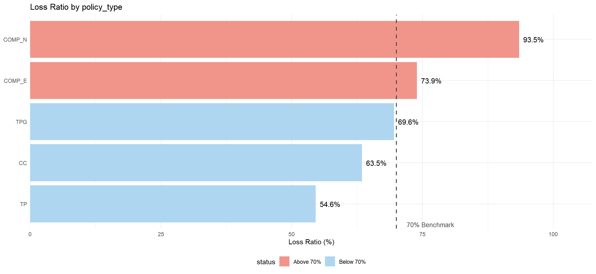
NoteLoss Ratio by Policy Type
- COMP_N is the most unprofitable product at 93.5%, far exceeding the 70% benchmark by 23.5 percentage points. Immediate repricing is needed. The 19 point gap between COMP_N (93.5%) and COMP_E (73.9%) demonstrates that the excess/deductible is highly effective at reducing claims cost.
- TP is the most profitable at 54.6%, sitting 15.4 points below the benchmark. Low claim frequency from limited coverage scope offsets its high individual claim severity.
- TPG (69.6%) falls just below the 70% threshold, appearing healthy but barely so. It is surprisingly less profitable than CC (63.5%) despite simpler coverage, suggesting glass replacement costs are underpriced relative to their frequency.
- Overall, two out of five products (COMP_N and COMP_E) exceed the 70% healthy benchmark, signaling underpricing in comprehensive coverage. The remaining three sit below the line but CC and TPG are not far from crossing it, consistent with the worsening loss ratio trend seen in the temporal analysis.
Show the code
group_var <- "bonus_score"
bonus_colors <- c(
"G" = "#F5B7B1", # light red
"B" = "#E74C3C", # medium red
"N" = "#922B21" # dark red
)
motoinsu %>%
group_by(!!sym(group_var)) %>%
summarise(loss_ratio = sum(total_incurred)/sum(total_premium)*100) %>%
ggplot(aes(x = reorder(!!sym(group_var), loss_ratio),
y = loss_ratio, fill = !!sym(group_var))) +
geom_col() +
geom_text(aes(label = paste0(round(loss_ratio, 1), "%")), hjust = -0.2, size = 4) +
coord_flip() +
scale_fill_manual(values = bonus_colors) +
scale_y_continuous(expand = expansion(mult = c(0, 0.15))) +
labs(title = paste("Loss Ratio by", group_var), x = NULL, y = "Loss Ratio (%)") +
theme_minimal() +
theme(legend.position = "none")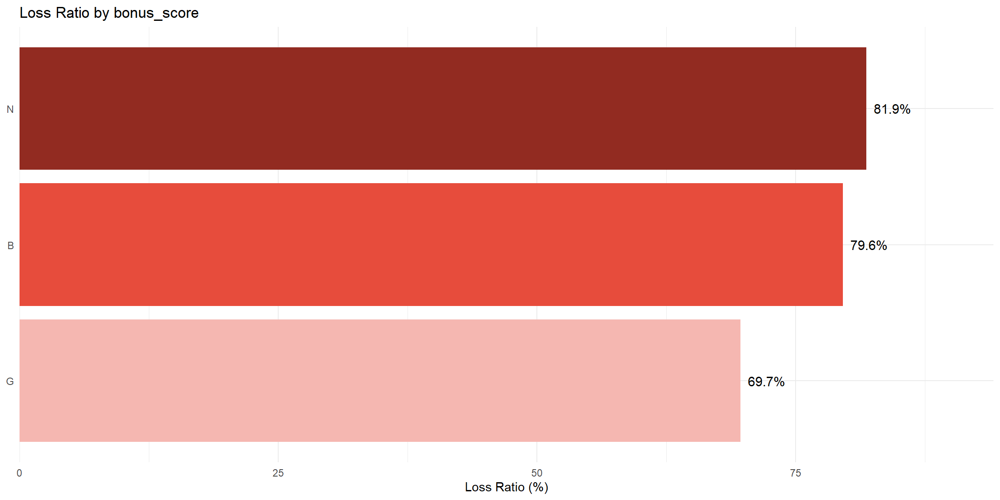
NoteLoss Ratio by Bonus Score
Results follow expected pattern - G (Good history) is most profitable at 69.7%, N (New) is most costly at 81.9%, with B (Bad) in between at 79.6%. The 12-point gap between G and N confirms claims history is a strong predictor of future loss.
With 69.3% of the portfolio being new business, the insurer is heavily exposed to the highest-loss segment, directly contributing to the worsening loss ratio trend seen in 2022 to 2024.
4.2.4 Density plot: Driver Age by Bonus Score
We use density plot to show if young/new drivers skew toward N/B scores.
Show the code
ggplot(motoinsu,
aes(x = driver_age,
fill = bonus_score)) +
geom_density(alpha = 0.4) +
labs(title = "Density plot: Driver Age by Bonus Score", x = "Age", y = "Loss Ratio (%)") +
theme_minimal()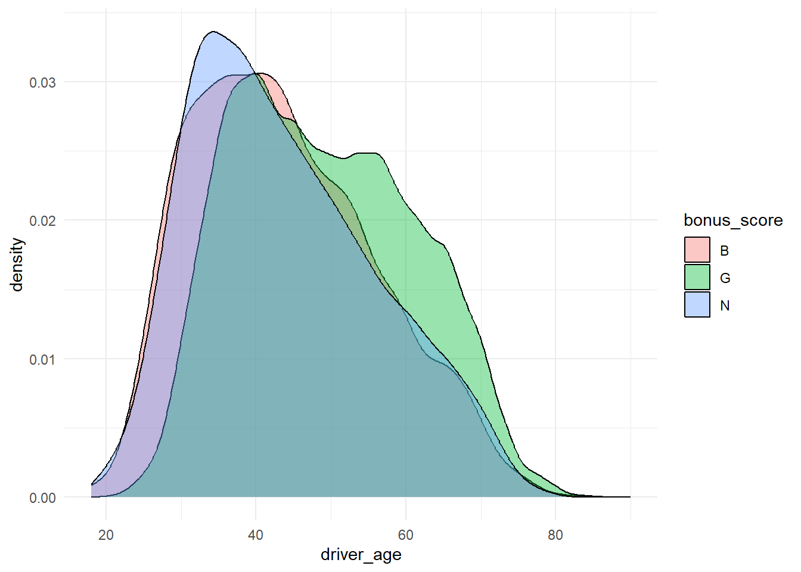
Note
- N (New, blue): youngest drivers.
Peak sharply around age 33–35, very narrow distribution.
New policyholders skew younger - first-time insurance buyers.
- B (Bad history, pink): mirrors N almost exactly.
Nearly identical age distribution to N.
Suggests bad-score customers are largely the same cohort as new customers - young drivers who recently accumulated claims.
- G (Good history, green): older and wider spread.
Bimodal: one peak ~40, second bump around 55–65.
Experienced drivers with long clean records dominate the older age bands.
The long right tail to age 80+ is almost entirely G - elderly drivers have good bonus scores from decades of claim-free driving.
4.2.6 Correlation Matrix
Show the code
ggstatsplot::ggcorrmat(
data = motoinsu,
cor.vars = c(total_premium, total_incurred, total_claims,
total_exposure, vehicle_value, driver_age,
vehicle_age, age_driving_licence, power_to_weight_ratio),
title = "Correlation Matrix of Key Variables",
colors = c(RColorBrewer::brewer.pal(3, "BrBG")[c(1, 2, 3)]),
ggcorrplot.args = list(
lab_size = 4
)
)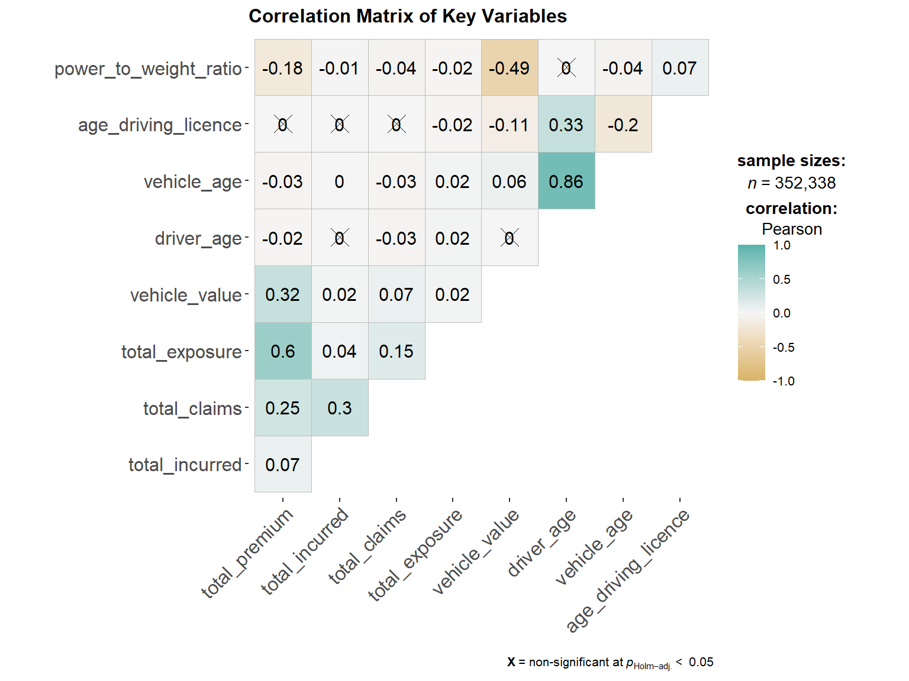
NoteInsights
Strong pairs:
vehicle_ageandage_driving_licence(0.86): nearly duplicate variablestotal_exposureandtotal_premium(0.6): longer policies generate higher premiums, expectedvehicle_valueandtotal_premium(0.32): surprisingly weak, pricing is not strongly value-driven
Negative relationships:
power_to_weight_ratioandvehicle_value(-0.49): high-performance vehicles tend to be undervalued relative to their actual riskpower_to_weight_ratioandage_driving_licence(-0.18): younger licence holders gravitate toward higher-performance vehicles
Warning
total_incurred shows near-zero correlation with almost everything individually, meaning claim severity is driven by variable interactions rather than single factors. Multivariate analysis is necessary.
4.3 Multivariate Analysis
4.3.1 Heatmap: Policy type vs Fuel type
We use heatmap to visualize three variables.
Show the code
theme_exec <- theme_minimal(base_size = 14) +
theme(
plot.title = element_text(face = "bold", size = 16, color = "#1B2A4A"),
plot.subtitle = element_text(size = 12, color = "#5D6D7E"),
axis.text = element_text(color = "#5D6D7E"),
panel.grid.minor = element_blank(),
legend.position = "bottom"
)
loss_heatmap <- motoinsu %>%
group_by(policy_type, fuel_type) %>%
summarise(loss_ratio = sum(total_incurred) / sum(total_premium) * 100, .groups = "drop")
ggplot(loss_heatmap, aes(x = fuel_type, y = policy_type, fill = loss_ratio)) +
geom_tile(color = "white", linewidth = 1.5) +
geom_text(aes(label = paste0(round(loss_ratio, 1), "%")),
size = 4.5, fontface = "bold", color = "white") +
scale_fill_gradient(low = "#F9E79F", high = "#C0392B") +
labs(title = "Loss Ratio Heatmap: Policy Type vs Fuel Type",
x = "Fuel Type", y = NULL, fill = "Loss Ratio (%)") +
theme_exec +
theme(legend.position = "right")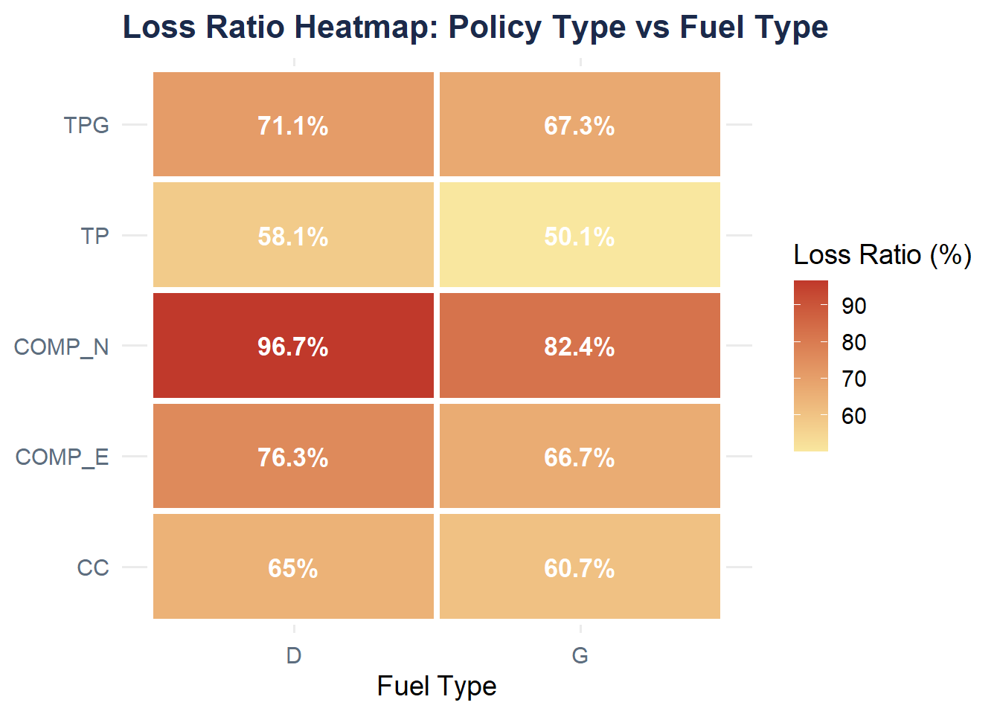
NoteInsights
- COMP_N: Has the highest loss ratio (~90%+) for both fuel types, with Diesel (D) appearing even more extreme (deep red). This policy type is clearly underperforming and likely unprofitable.
- Fuel type (D vs G): has minimal impact across most policy types, it likely shouldn’t be a primary rating factor in pricing models.
4.3.2 Bubble chart: Loss ratio by Vehicle brand
Let’s see the which vehicle brand has higher loss ratio. Note that we remove Others category from Vehicle brand group.
Show the code
brand_data <- motoinsu %>%
group_by(vehicle_brand_grouped) %>%
summarise(
loss_ratio = sum(total_incurred)/sum(total_premium)*100,
total_premium = sum(total_premium)
) %>%
filter(vehicle_brand_grouped != "Others") %>%
mutate(logo = case_when(
vehicle_brand_grouped == "RENAULT" ~ "images/renault.png",
vehicle_brand_grouped == "CITROEN" ~ "images/citroen.png",
vehicle_brand_grouped == "PEUGEOT" ~ "images/peugeot.png",
vehicle_brand_grouped == "VOLKSWAGEN" ~ "images/volkswagen.png",
vehicle_brand_grouped == "FORD" ~ "images/ford.png",
vehicle_brand_grouped == "SEAT" ~ "images/seat.png",
vehicle_brand_grouped == "OPEL" ~ "images/opel.png"
))
ggplot(brand_data, aes(x = total_premium, y = loss_ratio)) +
geom_image(aes(image = logo), size = 0.08) +
geom_text(aes(label = paste0(round(loss_ratio, 1), "%")),
vjust = -2, size = 3, fontface = "bold") +
geom_text(aes(label = paste0("€", scales::comma(round(total_premium/1e6, 1)), "M")),
vjust = 3, size = 2.8, color = "grey30") +
scale_x_continuous(labels = scales::comma) +
scale_y_continuous(expand = expansion(mult = c(0.2, 0.1))) +
labs(
title = "Loss Ratio vs Vehicle Brand (sized by Total Premium)",
x = "Total Premium (€)", y = "Loss Ratio (%)"
) +
theme_minimal() +
theme(legend.position = "none")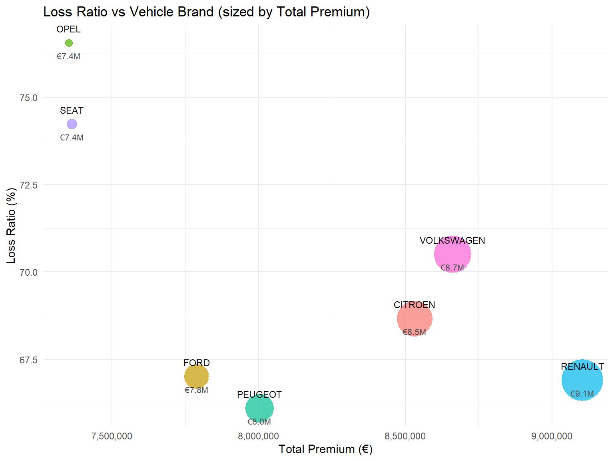
Note
High risk, low revenue — most concerning:
- OPEL (77%, €7.4M) — highest loss ratio but one of the smallest bubbles. Worst combination: unprofitable AND small contributor
- SEAT (74%, €7.4M) — same story, small premium volume but elevated risk
Acceptable risk, decent revenue:
- VOLKSWAGEN (71%, €8.7M) — largest bubble among named brands, moderate loss ratio. Most important brand to manage carefully given its revenue weight
- CITROEN (69%, €8.5M) — large bubble, below-average loss ratio. Best balance of volume and profitability among French brands
Best performers:
- PEUGEOT (66%, €8.1M) and RENAULT (67%, €9.1M) — lowest loss ratios with solid premium volumes. RENAULT is particularly valuable: largest revenue among named brands AND most profitable French brand
Show the code
anim_data <- motoinsu %>%
filter(vehicle_brand_grouped != "Others") %>%
group_by(year, vehicle_brand_grouped) %>%
summarise(
loss_ratio = sum(total_incurred) / sum(total_premium) * 100,
.groups = "drop"
) %>%
mutate(year_num = as.numeric(as.character(year)))
p <- ggplot(anim_data, aes(x = year_num, y = loss_ratio,
color = vehicle_brand_grouped,
group = vehicle_brand_grouped)) +
geom_line(linewidth = 1.2) +
geom_point(size = 3) +
geom_text(aes(label = vehicle_brand_grouped),
vjust = 1.5, size = 3, show.legend = FALSE, fontface = "bold") +
geom_hline(yintercept = 70, linetype = "dashed", color = "grey40") +
scale_x_continuous(breaks = c(2022, 2023, 2024)) +
labs(title = "Loss Ratio Trend by Vehicle Brand (2022–2024)",
x = "Year", y = "Loss Ratio (%)", color = "Brand") +
theme_minimal() +
transition_reveal(year_num) +
ease_aes("linear")
animate(p, nframes = 60, fps = 10, width = 800, height = 500,
renderer = gifski_renderer(),
res = 100, units = "px")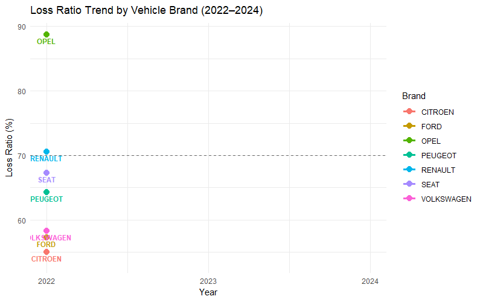
NoteInsights
Across three year window, RENAULT and PEUGEOT are the most stable, staying in the 63 to 68% range. They are the safest brands in the portfolio and should be prioritized for customer retention.
OPEL continues to show warning to be the highest volatile brand. This instability suggests a small portfolio where a few large claims can swing the ratio wildly. Unpredictable and hard to price.
SEAT is consistently the worst among mid range brands, hovering around 70 to 80% across all three years. It never dips below the benchmark, confirming it is structurally underpriced.
Warning
- RENAULT and PEUGEOT are the most valuable brands, combining high premium volume with the lowest and most stable loss ratios across all three years. These should be prioritized for customer retention.
- OPEL and SEAT generate the least revenue while being the most unprofitable. OPEL is extremely volatile year to year, while SEAT is consistently above the benchmark, confirming structural underpricing. Both require urgent pricing review.
5 Summary
This study applied visual analytics techniques to a real world motor vehicle insurance portfolio dataset from a Spanish insurer, covering 354,140 policy records across 47 variables from 2022 to 2024. Through systematic univariate, bivariate, and multivariate analysis, several critical findings emerged.
Key Findings
- The portfolio is growing but increasingly unprofitable, with loss ratio worsening sharply from 2022 to 2024 driven by rising claims severity alongside declining premiums.
- The insurer relies heavily on new business acquisition over renewals, and new customers consistently carry the worst loss ratios, directly contributing to portfolio deterioration.
- COMP_N is the most dangerous product with both the highest claim frequency and highest incurred losses, confirming that the absence of a deductible encourages excessive claiming. The gap with COMP_E proves deductibles are highly effective.
- Optional coverages are systematically underpriced, with fire showing the most extreme mismatch between what is charged and what is paid out, followed by occupants and glass. Only legal protection appears adequately priced. Mandatory coverages show mature pricing.
- Younger drivers cluster in the new and bad bonus score categories, suggesting these are largely the same cohort of first time buyers who quickly accumulate claims.
- RENAULT and PEUGEOT are the most valuable brands, combining high revenue with the lowest and most stable loss ratios across all three years. OPEL and SEAT are the opposite: low revenue, high loss ratios, and in OPEL’s case extreme volatility.
Recommendations for future research
- Confirmatory statistical analysis: Future studies should incorporate formal hypothesis testing and regression modeling to validate these exploratory findings and establish causal relationships between risk factors and profitability.
- Temporal granularity: Extending the analysis to monthly or quarterly intervals could reveal seasonal patterns in claims frequency and severity that annual aggregation may obscure.
- Customer retention analysis: Investigating the relationship between cancellation behavior, policy tenure, and profitability would help design better retention strategies for low risk segments.
- External data enrichment: Incorporating macroeconomic indicators such as inflation rates, repair cost indices, and regional accident statistics could improve understanding of the drivers behind rising claims severity.
References
1.3.5.17. Detection of Outliers. n.d. https://www.itl.nist.gov/div898/handbook/eda/section3/eda35h.htm.
Embrechts, Paul, and Hanspeter Schmidli. 1994. “Modelling of Extremal Events in Insurance and Finance.” Zeitschrift Für Operations Research 39 (1): 1–34. https://doi.org/10.1007/BF01440733.